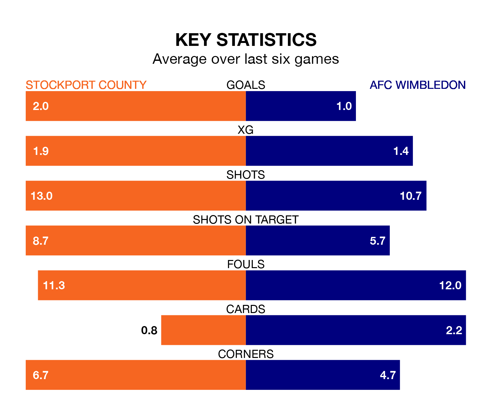

Two of EFL League Two's meanest defences go head-to-head at Edgeley Park on Monday, when Stockport County host AFC Wimbledon.
Only one side – Mansfield Town – has conceded fewer goals than Stockport to date: the home side have let in just 40 goals in 39 games.
The Dons have conceded 43 goals in 41 games, giving them the fourth tightest back line so far this season.
Key to the Hatters' home form has been Ben Hinchiffe, who has allowed 0.97 goals past him per 90 minutes, compared to 1 for Alex Bass in the opposite net.
Stockport are top of the table after 39 games, of which they have won 21 and drawn 11, earning 74 points.
Wimbledon are seven places behind County in eighth, with 15 wins and 14 draws putting them on 59 points.
In Isaac Olaofe, the Hatters have one of the league's most on-form strikers so far this season. He has notched 19 goals in 39 appearances, to sit fourth in the scoring charts.
His goal rate of one every 138 minutes is quicker than that of Ali Al-Hamadi, the Dons' top scorer with a goal every 152 minutes, and a total of 13 goals in 23 games.
The home side are in reasonable form in EFL League Two, with three wins and three draws from their last six games.
With two wins and three draws over that period, the visitors' form is worse – they have taken nine points from 18, compared to Stockport's 12.
In the last three years, Stockport and Wimbledon have played each other on three occasions. Stockport won two of them and Wimbledon one.
Their last meeting was on September 9, when Stockport won 2-1 away.
Stockport's last match was on Friday, a 3-0 win against Forest Green Rovers, with Callum Camps, Connor Lemonheigh-Evans and Rico Ricukus getting the goals for the Hatters.
Wimbledon drew 1-1 with Harrogate Town last time out, also on Friday, with Ronan Curtis on the scoresheet.
Updated: 10:31 (UTC), 31/03/24